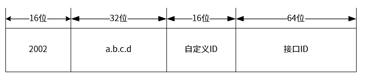
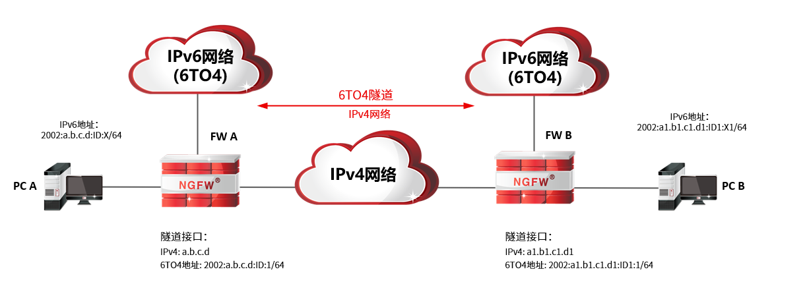
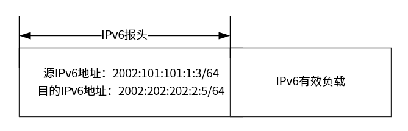
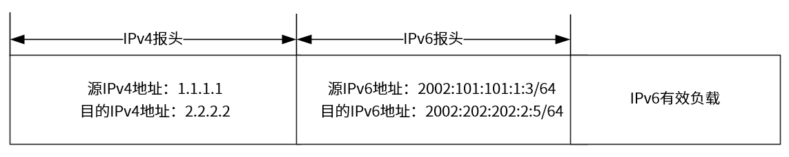
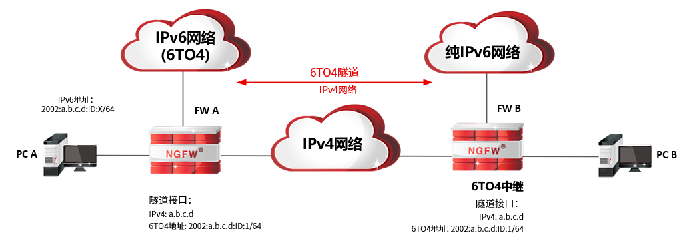
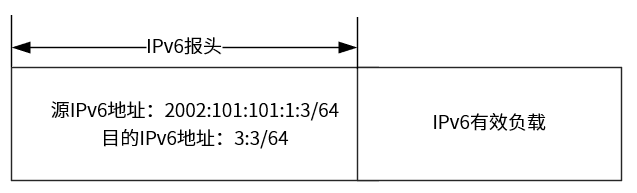
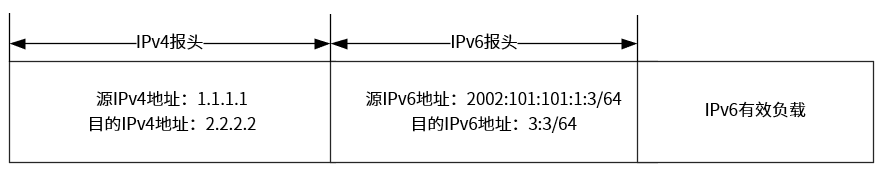
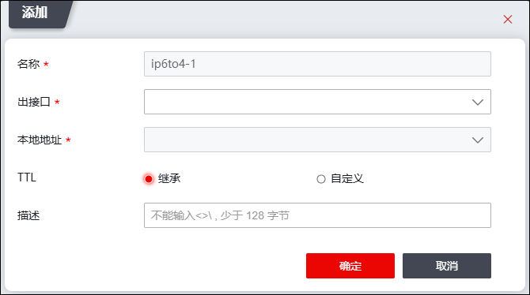

6to4 隧道为自动隧道，是一种点到多点的隧道技术（同一个隧道源端，可对应多个隧道目的端）。一般来说，一条隧道需要有一个起点一个终点，而6to4隧道只需指定隧道起点，隧道终点由NGFW根据数据流的目的IP地址获取。6to4隧道适用于IPv4向IPv6网络过渡的初期阶段，可将多个IPv6孤岛通过IPv4网络连接起来。6to4隧道采用规定的地址格式：

Øa.b.c.d是6to4隧道接口的IPv4地址，它嵌入在IPV6地址中，占32位，可用来确定6to4隧道的终点。
Ø6to4地址的网络前缀长64位，前面48位由6to4隧道接口的IPv4地址决定，后面16位由用户自定义，该前缀长度具有很大的地址空间，管理员需根据该前缀长度为6to4网络设备及其网络分配IP地址。
6to4隧道两端可以均为IPv6(6to4)网络（IPv6地址以2002:a.b.c.d::开头），也可以一端为IPv6(6to4)网络（IPv6地址以2002:a.b.c.d::开头），另外一端为非特殊纯IPv6网络，对端IPv6网络不同，6to4隧道的通信机制有差异，接下来根据6to4隧道对端是6to4网络还是纯IPv6网络，分别介绍6to4隧道的通信机制。
l6to4隧道对端为IPv6(6to4)网络
以PC_A-->FW_A-->FW_B-->PC_B报文转发过程，介绍6to4隧道的工作原理（IP地址举例说明）。

ØFW_A和FW_B位于IPv6网络与IPv4网络边界，分别需申请公网IPv4地址，并将该申请的公网IP地址配置为6to4隧道接口IP地址。
Ø根据隧道接口IPv4地址，转换6to4地址前缀，该地址前缀空间较大，可用于为IPv6(6to4)网络各设备分配IPv6地址（全球单播地址）。
处理过程如下（FW_A和FW_B申请的公网地址分别为1.1.1.1、2.2.2.2，ID取值分别为1、2，PC_A、PC_B的IPv6地址X取值分别为3、5）：
(1)PC_A主机发出报文
IP地址以上图为例：PC_A发送请求格式为：

（2）FW_A接收PC_A请求，检查目的地址，如果报文的目的地址不是自身且下一跳出接口为6to4隧道接口，就要把收到的IPv6报文作为数据部分，加上IPv4报文头（源地址为6to4隧道接口IPv4地址、目的地址为从源IPv6报文的目的地址中自动提取）。

（3）在IPv4网络中，封装后的报文被传递到对端的FW_B。
（4）对端设备接收到报文后，发现目的地址是自己，对报文解封装，去掉IPv4报文头，然后根据解封装后IPv6报文头的目的地址将此报文转发到主机PC_B。
（5）PC_B收到报文后，对此进行响应。响应按照相同流程处理。
l6to4隧道对端为纯IPv6网络
如果希望IPv6(6to4）网络连接纯IPv6网络，需要使用6to4中继。如下图所示。

Ø需要使用6to4中继（NGFW支持6TO4隧道的同时，支持6to4中继，6to4中继无特殊配置，与对端建立6TO4隧道即可）
ØFW_A需配置一条指向6to4中继的IPv6默认路由
IPv6(6to4)网络中的用户访问纯IPv6网络用户的请求处理流程如下（FW_A和FW_B申请的公网地址分别为1.1.1.1、2.2.2.2；ID取值分别为1、2；PC_A的IPv6地址X取值分别为3；PC_B的IP地址为3::3）：
（1）PC_A向PC_B发送请求
IP地址以上图为例：PC_A发送请求格式为：

（2）数据报文到达FW_A，FW_A会查找路由转发表确定如何转发数据报文；因FW_A中未配置去往纯IPv6网络的路由，请求会匹配上默认路由，默认路由下一跳地址为6to4中继的6to4地址（FW_A可根据该6to4提取6to4中继的公网IPv4地址），然后继续根据下一跳地址进行路由表的递归查找，最终发现需要通过6to4隧道转发数据报文，于是FW_A给原始的IPv6数据报文加入新的IPv4隧道头（IPv4隧道头的源IP地址为FW_A的6to4隧道IPv4地址，目的地址为6to4中继公网IPv4地址），将报文转发出去。

（3）在IPv4网络中，封装后的报文被传递到对端的FW_B(6to4中继)。
（4）6to4中继接收FW_A发送到纯IPv6网络的数据报文后，发现目的地址为自己，解封装，去掉IPv4报头，然后将报文转发到纯IPv6网络中真实设备中，当真实设备响应时，6to4中继会根据返回报文的目的地址进行6to4封装，这样，数据就能返回到6to4网络中了。
配置6to4隧道的具体操作如下：
| 步骤1 | 选择 。 |
| 步骤2 | 添加6to4隧道。 |
1）点击『添加』，如下图所示。

各项参数的具体说明如下表所示。
参数 |
说明 |
|---|---|
名称 |
必选项，在下拉框选择隧道名称，不同的6to4隧道需选择不同的隧道名称，隧道名称以“ip6to4-”开头。 |
出接口 |
必选项，在下拉框中选择隧道出接口，对于需经该隧道处理的报文从指定隧道出接口转发出去。 |
本地地址 |
必选项，在下拉框中选择本地接口中用于与隧道对端通信的接口IPv4地址。 |
TTL |
可选项，设置6to4隧道本端设备与对端设备经过的最大路由器数目。可选项：继承、自定义。 Ø继承：TTL值继承原数据包IP报头中的TTL值。 Ø自定义：TTL值自定义，取值范围为1-255。 |
描述 |
可选项，输入6to4隧道简单的描述信息。 |
2）点击【确定】按钮完成6to4隧道的创建。新添加的6to4隧道会显示在界面上。
|
²6to4隧道创建完成后，会生成一个与隧道名称一致的虚接口。如隧道名称命为ip6to4-0，则虚接口为ip6to4-0。 |

| 步骤3 | 勾选6to4隧道列表，点击列表上方的“编辑”在弹出的界面中配置隧道接口IPv6地址，地址格式需遵循6TO4隧道地址格式要求（前缀为：2002:w.x.y.z:id::/64，w.x.y.z需为6TO4隧道的本地接口IPv4地址）。 |
| 步骤4 | 选择 ，配置6to4路由。 |
如果配置了出接口为6to4虚接口的路由，匹配该路由的数据报文则需通过指定6to4隧道传输。关于路由的配置具体请参见 静态路由。